What features do visual cortical neurons care about?
In our recent work Compact deep neural network models of visual cortex, we accurately modeled the responses of higher-order visual cortical responses (from mid-level visual area V4). These models provide a window into the computations of these neurons --- including what visual features they prefer.
Here we optimize images to strongly drive our models in an effort to find out what images V4 neurons care about.
We tried three types of images:
- maximizing natural images: the top 50 images (out of 500k) that elicited the largest responses
- maximizing synthesized images: a synthesis technique where each gradient step adds a bit more to the image
- maximizing block images: a greedy method where each added block increases the model's output response
Here are some example V4 neurons:
| 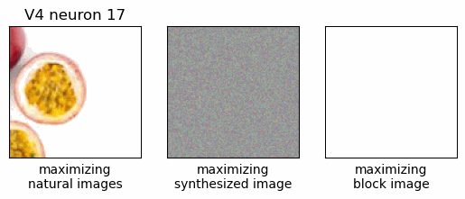 | 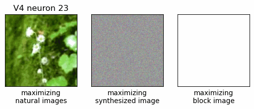 |
| 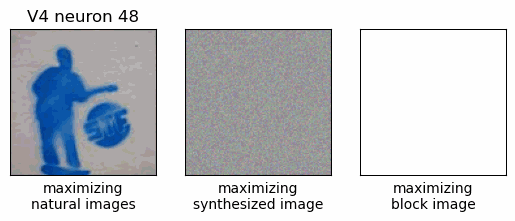 | 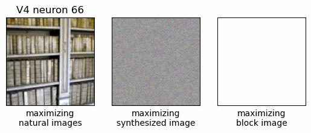 |
| 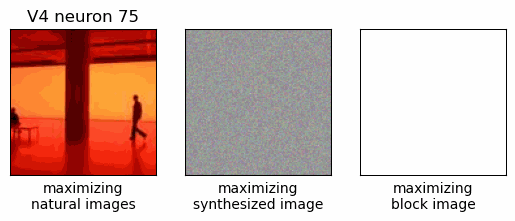 | 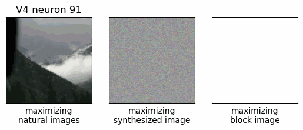 |
| 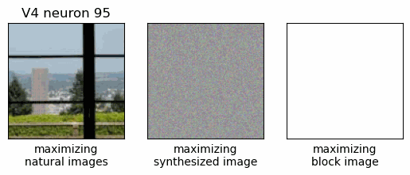 |  |
| 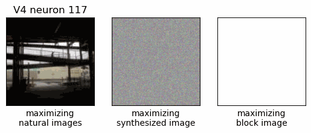 | 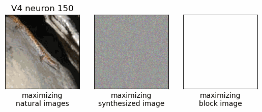 |
| 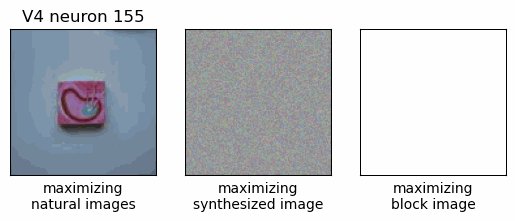 | 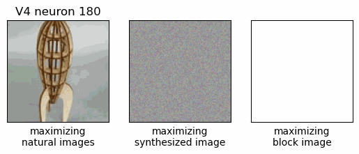 |